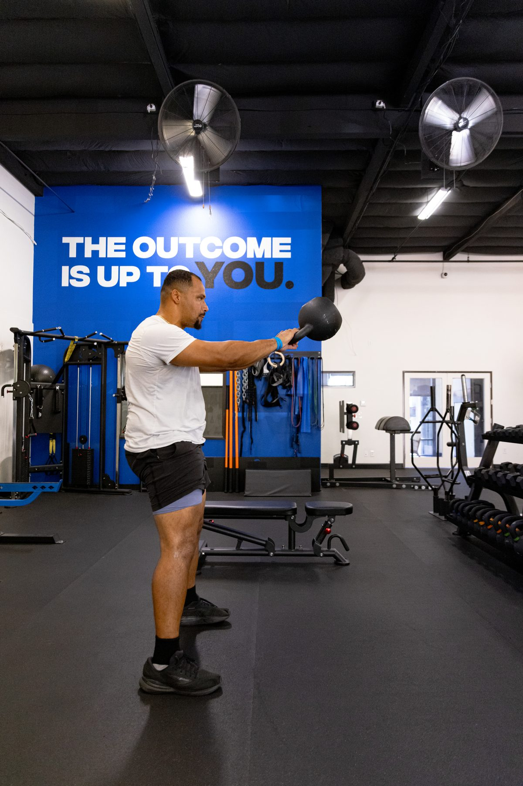
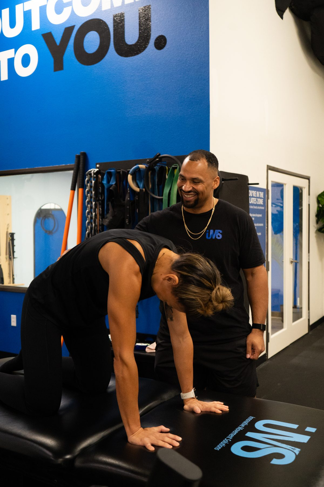

Home/About Jason
Founder & Head CoachCoaching built on expertise. Designed for adults who want to move well for life.

- FRC
- FRA
- Kinstretch
- FRC-ISM
I founded IMS on one belief: most adults don't need more workouts — they need a smarter system.
After years working in strength training, sports performance, and movement coaching, I developed a hybrid approach that begins with joint health and movement quality before adding load. The result is a methodology grounded in how the body actually works — not how it looks in a training video.
Jason — expand here: the origin story. What got you into this work? What was the turning point with FRC? Write 2–3 paragraphs in your own voice. This is the brand for a solo practice — thin generic copy will undercut the premium positioning.
Jason — expand here: the focus on adults 35–65. Why this demographic? What did you see that the industry was missing? A paragraph in your voice.
I hold certifications in Functional Range Conditioning (FRC), Functional Range Assessment (FRA), Kinstretch, and FRC-ISM — among the most rigorous credentials available in the movement and mobility field. These aren't weekend certifications. They represent thousands of hours of study and practice, and an ongoing commitment to applying it with every client.
IMS is at 10625 Scripps Ranch Blvd, Suite D, San Diego, CA 92131. Call (619) 937-1434 or book online.
A private space — not a gym floor.




Capacity is limited. The work is personal.
Start with a free Movement Assessment. We'll know inside thirty minutes whether IMS is the right fit for what you want next.
Book Your Free Assessment